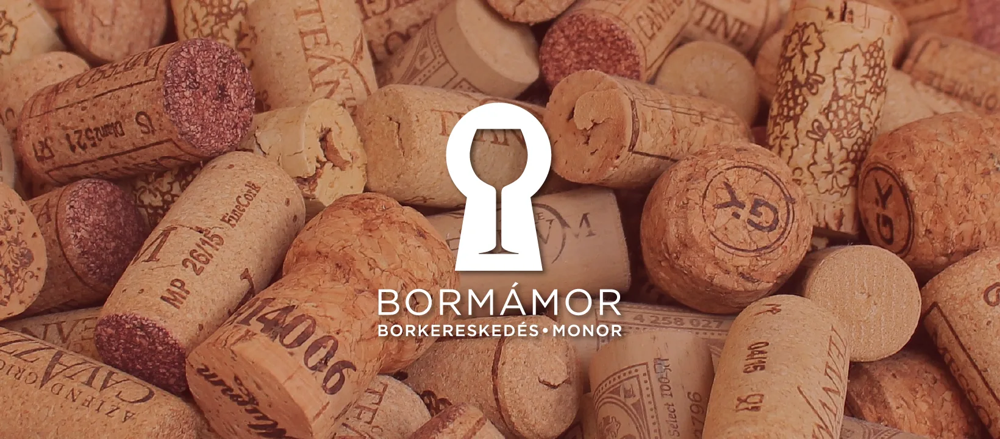

Bormámor • Monor
A monori borok. Egy helyen. Egy jó történettel.
Válogatott helyi borok, különleges tételek és személyes ajánlás Monor szívében.
Kiss Ernő utca 9. • Monor
Kulcs a minőséghez.
A Bormámor azért jött létre, hogy Monor borai és a környék különleges értékei egy helyen legyenek elérhetők. Egy palack vacsorához, ajándékba, egy baráti estéhez — vagy egyszerűen azért, mert valami igazán jót keresel.
Borkereskedés • Monor

01Válogatás
Monor palackba zárva.
Válogatás a környék pincészeteinek boraiból.
-
Friss fehérek
Könnyű, élénk — kerti vacsorákhoz.
-
Illatos rosék
Terasz, naplemente, semmi sietség.
-
Különleges sillerek
Amikor a megszokotton túlra viszünk.
-
Vörösborok
Testes tételek hosszú estékre.
-
Pezsgők
Az alkalom, ami még csak készülődik.
A választék folyamatosan változik — az aktuális tételekért érdemes benézni hozzánk vagy telefonon érdeklődni.

02Nem csak bor
Több mint egy borszaküzlet.
A kínálatban időszakosan megtalálhatók:
- Minőségi magyar borokpezsgők
- Kézműves sörökpálinkák
- Prémium whiskygin
- Rumkonyak
- Helyi és kézműves gasztronómiai különlegességek
A készlet időnként változik — válogatott különlegességekért érdeklődj üzletünkben.
03Alkalomhoz választunk
Nem kell értened a borhoz.
Elég tudnod, milyen alkalomra keresed.
Nem tudod, melyik a te alkalomod?
Segítünk választani — Hívás04Élmény
A bor akkor válik történetté, amikor együtt kóstoljuk.
Kóstolók és gasztronómiai programok időszakosan, változó témákkal rendezünk. A következő alkalom időpontját mindig a Facebook-oldalunkon jelenítjük meg.
Monori Pincefalu
Monor íze.
Monor története.
Monoron a bor és a pincekultúra régóta a helyi élet része: a Pincefalu pincesorai, a környék pincészetei és az itt élők vendégszeretete nélkül nem lenne miből válogatnunk. Abból válogatunk, amit itt, Monor környékén ismerünk.
05Képek a Bormámorról
Ami felismerhetővé teszi.
06Kapcsolat
Gyere át, vagy hívj minket.
- Cím
- 2200 Monor, Kiss Ernő utca 9.
- bormamormonor@gmail.com
- Bormámor Monor
- Nyitvatartás
- Péntek: 10:00–18:00 Szombat: 09:00–14:00 Egyéb napokon nyitvatartásért hívj minket.